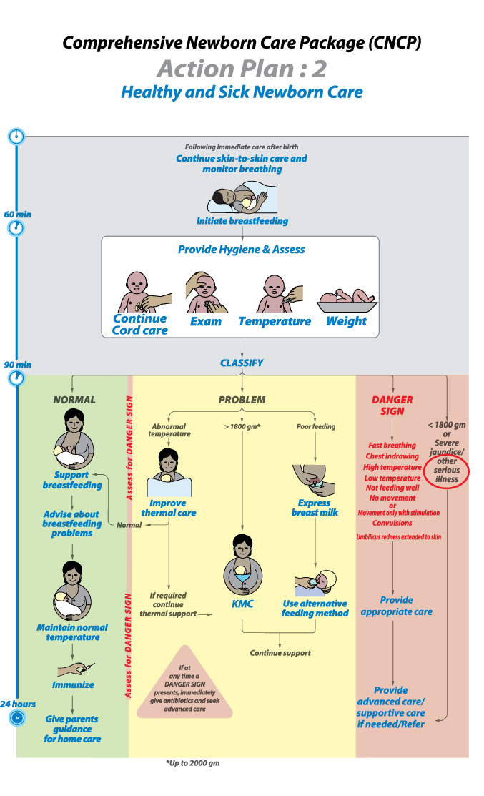
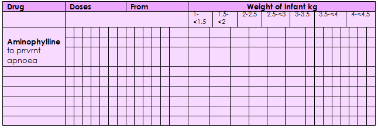

Pic: Action Plan# 2.22
Neonatal meningitis is a serious medical condition in newborns. Meningitis is an inflammation of the meninges (the protective membranes of the central nervous system-CNS) and is more common in the neonatal period and is an important cause ofneonatal morbidity and mortality globally. Mortality is roughly half in developing countries and ranges from 8%-12.5% in developed countries.

Symptoms seen with neonatal meningitis are often unspecific that may point to several conditions, such as sepsis (whole body inflammation). Suspect meningitis if any one of the following is present: drowsy, lethergic or unconscious, convulging, has a bulging fontanelle, irritable, has a high-pitched cry.
Neonatal meningitis is mostly caused by Group B Streptococci (Streptococcus agalactiae), Escherichia coli, other Gram-negative rods, Streptococcus pneumoniae, and Listeria monocytogenes. Most neonatal meningitis result from bacteremia (bacterial infection of the blood). Delayed treatment of neonatal meningitis may cause cerebral palsy, blindness, deafness, and learning deficiencies.
The only method to determine if meningitis is lumbar puncture, it is important to attempt lumbar puncture once the baby has been stabilized, ideally within 2 hours of initiating antibiotic treatment, because it serves to confirm the diagnosis.
Management
- The first-line antibiotics are Ampicillin (50 mg/kg/dose IV or IM 12 hourly if the baby is less than 7 days; 8 hourly if the baby is more than 7 days) and Gentamicin (5 mg/kg/dose once daily IV or IM if the baby is less than 7 days; 7.5 mg/kg/dose once daily if the baby is more than 7 days for 3 weeks)
- Alternatively, along with Gentamicin, give a third-generation cephalosporin, such as Ceftriaxone (50 mg/kg every 12 hr if <7 days of age and 75 mg/kg if >7 days of age) or Cefotaxime (50 mg/kg every 12 hr if <7 days of age or every 6–8 hr if >7 days of age), for 3 weeks
- If there are signs of hypoxaemia, give oxygen
- If the baby is drowsy or unconscious, ensure that hypoglycaemia is not present; if it is, give 2 ml/kg 10% glucose IV
- Treat convulsions (after ensuring they are not due to hypoglycaemia or hypoxaemia) with phenobarbital
- Make regular checks for hypoglycaemia
Oxygen therapy
Give oxygen to neonates or young babys with any of the following:
- Central cyanosis or gasping
- Grunting with every breath
- Difficulty in feeding due to respiratory distress
- Severe lower chest wall in-drawing
- Head nodding (i.e. a nodding movement of the head, synchronous with the respiration and indicating severe respiratory distress)
- Use a pulse oximeter to guide oxygen therapy. Oxygen should be given if the oxygen saturation is ≤ 90%, and the oxygen flow should be regulated to maintain saturation of > 90%. Oxygen can be discontinued once the baby can maintain saturation > 90% in room air.
- Nasal prongs are the preferred method for delivering oxygen to this age group, with a flow rate of 0.5–1 litre/min, increased to 2 litres/min in severe respiratory distress to achieve oxygen saturation >90%.
- Thick secretions should be cleared from the throat by intermittent suction under direct observation, if they are obstructing the airway and the baby is too weak to clear them.
- Oxygen should be stopped when the baby’s general condition improves and the above signs are no longer present.
Doses of common drugs for neonates and low-birth-weight infants

